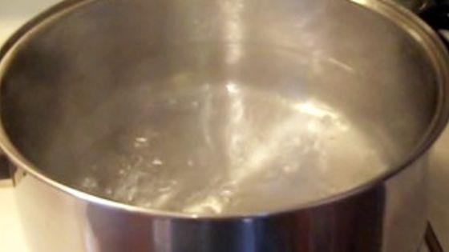

How to Boil Water

Description
The perfect recipe for any new cook. Professional results in just seven minutes. "And it's gluten free, too!"
-Mrs_Kupkake
Ingredients
Steps
- Open your cupboard or wherever it is you store your cookware.
- Locate a 12-quart stockpot. If you do not have a 12-quart stockpot, you may use whatever size pot you have;
in that event, keep in mind that serving size here is 1 cup and there are 4 cups in a quart. Do the math.
- Place your pot in the sink under the tap. If you have never used a sink before, it is the large depression
in your counter top. (If you live with someone else, they may have filled it with dirty dishes; in this
case, wash them or simply remove them from the sink and place them in the oven — someone else will
eventually discover them there and wash them.).
- Turn the cold-water knob to the "on" position. Some people (like my dad) prefer to let the water run a
little bit. This is optional but encouraged — if it's a hot day or someone has previously used the "hot"
water knob, the warmer water will eventually be replaced by truly cold water.
- Fill stockpot to within a couple inches of the rim.
- Lift stockpot from sink and transfer to stove. (Although appearances may vary, the stove is the thing with 4
or more circular metal bands on top of it; alternately, it may be a completely flat black glass surface. If
you are unsure, ask your family, roommate, or neighbor for guidance.).
- Find knob on stove that corresponds to the "burner" you have placed your pot on. In addition to words like
"Right Front" or "Left Rear," there are usually little pictures near the knobs to indicate position.
- Turn knob to "High" and wait until water boils. Depending on strength of your stove and amount of water, the
boiling time may vary. Note: DO NOT WATCH THE POT; it will never boil in the event that you
do.
- Boiled water may be used for any number of applications. Serve hot but do not drink.
Return to main page